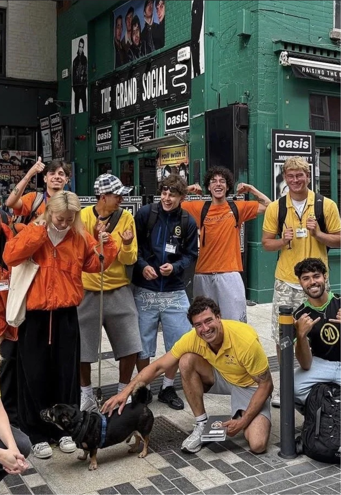

FACE-TO-FACE FUNDRAISING AGENCY
Real people.
Real connections.
Real impact.
We help charities meet the people who care. Through thoughtful, face-to-face fundraising, we turn meaningful conversations into lasting support.
change the world.
Lasting change.↗
in every hello.
GOOD
HAPPEN
Fundraising is more than asking.
It’s about connecting.
Charities do extraordinary work. We bring that work closer to people through genuine conversations, engaging campaigns and fundraising teams who believe in the causes they represent.
A little about us →Good people.
Out there making
good happen.
Face-to-face fundraising is powered by people. Our teams bring charity missions into the streets, meeting the public with enthusiasm, care and genuine conversations.
More about our approach →
TEAM KM ✳PEOPLE-POWERED
Good causes.
Great conversations.
We bring charity missions to life out in the world—building awareness, inspiring supporters and creating momentum.
Face-to-face
fundraising
Personal conversations that invite people to become part of something bigger.
Explore service →02Supporter
acquisition
Helping charities grow a community of committed, long-term supporters.
Explore service →03Campaign
delivery
Purpose-led campaigns built around people, place and the cause.
Explore service →“The right conversation
can change everything.”
Purpose always.
We believe
in the human
side of change.
Our work starts with people. We create space for authentic conversations, equip teams to represent causes with care, and help charities reach the supporters who can make a difference.
Our approach ↗